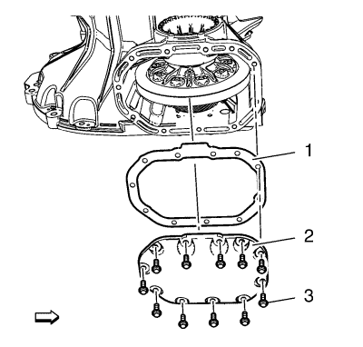
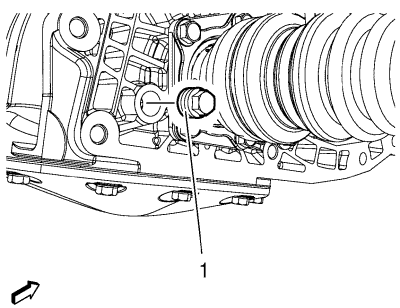
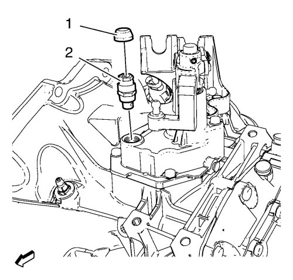

Sustitución del aceite del cambio
Procedimiento de desmontaje
Advertencia: El líquido de la transmisión está caliente. Tenga mucho cuidado para evitar sufrir lesiones físicas al drenar el líquido de la transmisión de ésta.
- Elevar el vehículo y soportarlo de manera segura. Consultar Elevación y soporte en alto del vehículo .

- Desmonte los pernos (3) de la tapa de la carcasa del embrague y del diferencial.
- Desmonte la tapa (2) de la carcasa del embrague y del diferencial y permita que el cambio se vacíe completamente.
- Desmonte la junta (1) de la tapa de la carcasa del embrague y del diferencial.
Procedimiento de montaje
- Monte la junta (1) de la tapa de la carcasa del embrague y del diferencial.
- Monte la tapa (2) de la carcasa del embrague y del diferencial.
Precaución:Consulte Precaución con las fijaciones en la sección Prólogo.
- Monte los pernos (3) de la tapa del embrague y del diferencial y apriételos a 30 N·m(22 lib. pie).

- Retire y DESECHE el tapón (1) de drenaje de aceite del cambio y añada aceite del cambio hasta que salga por el orificio del enchufe de comprobación del nivel de fluido.
- Bajar el vehículo.

- Retire la caperuza de llenado del cambio (1) y el tapón de llenado (2) y añada aceite del cambio hasta que salga por el orificio del tapón de comprobación del nivel de fluido.
- Elevar el vehículo
- Monte el NUEVO tapón de comprobación de aceite del cambio y apriételo a 6 N·m + 45°-180° (53 lib. pulg. + 45°-180°).
- Bajar el vehículo.
- Monte el tapón de llenado del cambio y apriételo hasta 35N·m (26 lib. pie).
| © Copyright Chevrolet. Reservados todos los derechos |